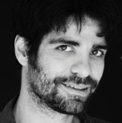

Llicenciada en Art Dramàtic a l’Institut del Teatre de Barcelona i llicenciada en Disseny Gràfic a l’ESDI de Sabadell. Amplia la seva formació amb diferents cursos, dels quals es pot destacar el de Site Specific, amb Charlotte Munck. Cofundadora i productora de la companyia Les Bianchis.
Beca per a la Recerca i la Creació en Arts Escèniques 2016 (Generalitat de Catalunya)
Plácido Mo és el seu primer projecte com a creadora.
Com a actriu l’hem pogut veure a El llarg dinar de Nadal (PREMI BUTACA 2015 - Millor espectacle de petit format), Les Supertietes (PREMI DEL PÚBLIC Mostra Igualada 2016) Troianes 15, Tirant lo Blanc, Gran Rifa d’un fabulós viatge a Mèxic (coproduccióde les companyies Teatro Ojo (Mèxic) i la Companyia Obskené. Coproducció internacional de Fira Tàrrega i el Centro de la Artes de San Luís Potosí (Mèxic) amb el suport de la Generalitat de Catalunya i Iberescena. Sota el Llit de Núria Vizcarro i Ricard Soler. Estrenat al Teatre Nacional de Catalunya. Coproducció de la Factoria Escènica Internacional (FEI) i el Teatre Nacional de Catalunya. Circ de la Lluna, d’Aimé Malena, dirigit per Ricard Soler, de la companyia Obskené, PREMI INJUVE 2010 de creació jove del Ministeri d’Igualtat del Estat Espanyol. Entre d’altres.
En televisió l’hem pogut veure en sèries com 39+1, Kubala Moreno y Manchón, Pop Ràpid o Ventdelplà.
En disseny treballa com a freelance des del 2005.
Llicenciada en direcció escènica i dramatúrgia a l’Institut del Teatre de Barcelona i llicenciada en Història de l’Art a la Facutat de Geografia i Història de la Universitat de Barcelona. Titulada en Tècnica dels Serveis Educatius i Assistencials.
(Operatrice dei Servizi Educativo/Assistenziali) a CIOF-FP/ER de Parma, Itàlia. Amplia els seus estudis en dansa i interpretació a escoles com Àrea, el Col·legi del Teatre o el Timbal de Barcelona. I en art contemporani amb els programes i simposis organitzats pel Macba, el CCB o la Fundació Miró de Barcelona. És cofundadora d’Obskené. Entre els projectes de la companyia destaca formar part de l’equip artístic del projecte Gran Rifa d’un Fabulós viatge a Mèxic junt la Companyia mexicana Teatro Ojo. Coproducció de Fira Tàrrega, Centro de las Artes de San Luís Potosí-Amb el suport d’Iberescena. Obskené. Taller de creació al Centro de las Artes de San Luís Potosí Mèxic i estrena a Fira Tàrrega 2014. Ha dirigit projectes com el site specific Nàpols, 27 en el marc del premi Kinétic de suport a la creació i les arts escèniques. Sala Sandaru . Obskené. 2014. Barcelona. L’obra Este no es un lugar adecuado para morir d’Albert Boronat. Obra inaugural del cicle Accent Obskené organitzat per la Sala Beckett. Setembre 2013.Barcelona.
Ha dirigit el projecte basat en la relació dels mitjans digitals i el teatre, al costat del col·lectiu de multimèdia EtcInventions. PSP. País sense Paraules de Dea Loher. Premi Beca Desperta Obskené. Estrenat a la Nau Ivanow 2013. Barcelona. I l’obra Hamlet és mort. No hi ha Força de Gravetat d’Ewald Palmetshofer. Companyia Obskené. Espectacle en Temporada al Teatre Versus de Barcelona. Abril 2011.
En el marc d’investigació destaca les ponències el El teatre com a recurs, en el marc I Jornades de Teatre Formatiu. Organitzat pel Grup d’Investigació i Assessorament Didàctic de la Facultat de Formació del Professorat. Universitat de Barcelona. Gener 2008. O la ponència Presenciality/virtuality: Relations Between the Theatre and the Digital World in Dea Loher’s Land Without Words. En el marc del programa Re-routing Perfomance. Conference 2013. Organitzat pel FIRT/ IFTR. Institut del Teatre, Barcelona.
Ha treballat també com a educadora en el Servei residencial amb persones amb discapacitat psíquica greu. Fundació ASPASIM de Barcelona. En el Servei d’acompanyament a joves amb risc social de Canovelles per a Grups pel Treball Sociocultural i en el Projecte Jove del Centre Cultural del Morell. Regidoria de Benestar social de l’Ajuntament del Morell de Tarragona.

Llicenciat en direcció escènica i dramatúrgia a l’Institut del Teatre de Barcelona, llicenciat en matemàtiques a la Universitat Politècnica de Catalunya, enginyer superior en telecomunicacions a la Universitat Politècnica de Catalunya, graduat en flauta de bec al Conservatori Superior Municipal de Música de Barcelona i format com a tècnic de llums a l’Institut del Teatre i en tecnologia de les arts de l’espectacle amb els creadors Jan Mech i Telenoika.
Actualment viu a cavall entre Barcelona i Montréal gràcies a una beca de la Caixa per realitzar un màster de recerca-creació en arts escèniques a la Universitat de Quebec a Montreal. Juntament amb Judith Pujol i Constanza Aguirre va fundar la companyia Obskené.
Ha dirigit espectacles de carrer com Fuenteovejuna, breve tratado sobre las ovejas domésticas. Espectacle reconegut amb el premi a millor espectacle al Festival Internacional de Teatro de Calle de Oropesa de Toledo, el Premi al millor espectacle del festival off de teatro clásico de Almagro 2013 i el Premi al millor espectacle de Zaragoza off 2013. Candidat a dos premis MAX 2015 (millor producció i millor espectacle revelació) i guanyador del Premi MAX a millor adaptació teatral.
L’espectacle Gran Rifa d’un fabulós viatge a Mèxic de les companyies Teatro Ojo (Mèxic) i la Companyia Obskené. Coproducció internacional de Fira Tàrrega i el Centro de la Artes de San Luís Potosí (Mèxic) amb el suport de la Generalitat de Catalunya i Iberescena. Trossos, Coproduït per la Companyia Obskené, Fira Tàrrega 2012 i Festival TNT, amb el suport de la Generalitat de Catalunya. I l’espectacle Circ de la Lluna, PREMI INJUVE 2010 de creació jove del Ministeri d’Igualtat del Estat Espanyol.
En espectacles de sala cal destacar l’espectacle familiar Sota el Llit de Núria Vizcarro i Ricard Soler. Estrenat al Teatre Nacional de Catalunya. Coproducció de la Factoria Escènica Internacional (FEI) i el Teatre Nacional de Catalunya. Redaliz de Pedro Lipcovich, estrenat al Festival GREC de Barcelona. Producció de la Companyia Obskené en col·laboració amb el GREC Festival i l’Institut del Teatre. L’Ogret de Suzanne Lebeau, coproducció de la FEI i el Centre d’Arts Escèniques de Reus. I Buenos Aires de Rafael Spregelburd, estrenat a l’Institut del Teatre de Barcelona. PREMI A MILLOR ACTRIU per Constanza Aguirre i seleccionat entre els tres millors espectacles de la 15a Mostra de Teatre de Barcelona.